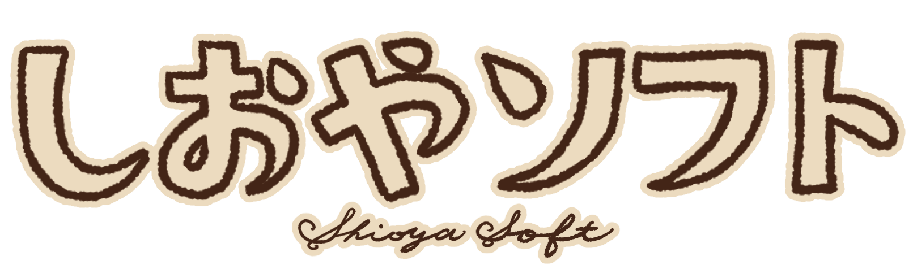

この
物語
ものがたり
はフィクションです。
実在
じつざい
の
人物
じんぶつ
・
団体
だんたい
・
事件
じけん
などとは
一切関係
いっさいかんけい
ありません。
利用規約
りようきやく
に
同意
どうい
し、ミニゲームをご
利用
りよう
ください。
歩
ある
きスマホは、
居玉
いぎょく
より
危険
きけん
です。
TAP TO START
ver 1.0.0
© 2026 Shioya Soft.